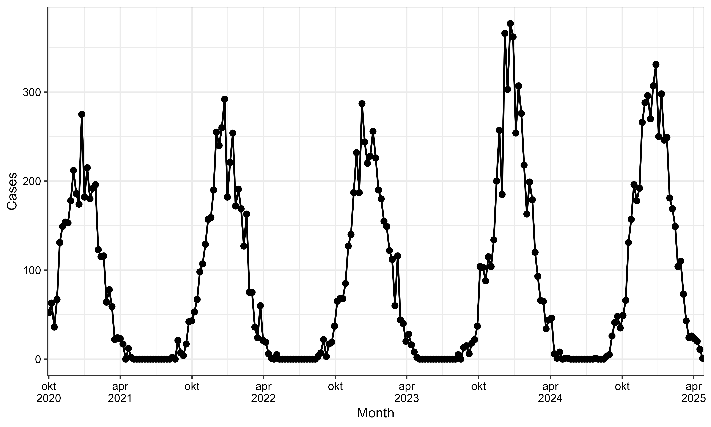

Automated Detection of Seasonal Epidemic Onset and Burden Levels in R
Source:vignettes/aedseo.Rmd
aedseo.RmdIntroduction
The aedseo package performs automated and early
detection of seasonal epidemic onsets and estimates the breakpoints for
burden levels from time series data stratified by season. The seasonal
onset (seasonal_onset()) estimates growth rates for
consecutive time intervals of cases and calculates the rolling average
of observations (cases or incidence) in the selected time intervals. The
burden levels (seasonal_burden_levels()) use the previous
seasons to estimate the burden levels of the current season. The
algorithm allows for surveillance of pathogens, by alarming when the
observations have significant growth in the selected time interval and
based on the disease-specific threshold, while also evaluating the
burden of current observations based on previous seasons.
Seasonal data
To apply the aedseo algorithm, data needs to be
transformed into a tsd object. If you have your own count
data, the to_time_series() function can be used with
cases, or with incidence,
population and incidence_denominator to
calculate cases or incidence. For binomial or proportional data, use
cases together with samples, or
proportion together with samples. The
time argument is always required, regardless of whether the
observations are cases, incidences, or proportions. The
time_interval argument is optional: if it is not specified,
weekly spacing is assumed; specify it only when the observations are
recorded at another supported interval, such as days or months. As
default both seasonal_onset() and
seasonal_burden_levels() use cases, but if
incidence is in the tsd object (for count
data) the output will be in incidence instead; proportional
input is kept on the proportion scale. If population is
additionally given as arguments (for count data) the function will
calculate the incidence per 100,000 (default for
incidence_denominator which can be changed in input). For
binomial inputs, samples supplies the denominator and
incidence_denominator is set to 1. In the following
section, the application of the algorithm is shown with simulated cases
created with the generate_seasonal_data()function. More
information about the function can be found in the
vignette("generate_seasonal_wave").
In the following figure simulated count data (solid circles) are visualised as cases over time (weeks). The solid line connects these circles, representing the underlying mean trend over five years of weekly data.
autoplot(tsd_data, time_interval_step = "6 months")
Determining season
Respiratory viruses can circulate in different seasons based on the location. In the nordic hemisphere they mostly circulate in the fall and winter seasons, hence surveillance is intensified from week 40 to week 20 in the following year. To include all data, the season in the example is set from week 21 to week 20 in the following year. In this example burden levels and seasonal onset will be estimated for season 2024/2025.
Determining the disease specific threshold
When cases are low there is a risk that randomness will result in significant growth estimates in isolated periods. To increase the robustness of the method a disease-specific threshold is introduced. It should be set such that subsequent estimates of growth are likely to be significant as well. The disease-specific threshold can be determined by examining continuous periods with sustained significant growth, and determine at what number of cases these events occur.
In this example the disease-specific threshold is determined based on consecutive significant weeks from all available previous seasons. Significant weeks are defined as those with a case count that has a significant positive growth rate.
To capture short-term changes and fluctuations in the cases, a
rolling window of size
is used to create subsets of the cases for model fitting, and the
quasipoisson family is used to account for
overdispersion.
The estimate_disease_threshold() function can be used to
automatically estimate the disease-specific threshold. As default it
uses;
- Three time steps that have to be significant for the sequence to be considered in the estimation.
- A max gap time of one time step that is allowed to be non-significant between two significant sequences.
- Three historical seasons.
- The longest sequence closest to the peak.
- A decay factor of 0.8 such that the influence of older seasons diminishes exponentially.
dth <- estimate_disease_threshold(tsd_data)
dth$disease_threshold
#> [1] 28.90435The disease-specific threshold can also be estimated analytically. In
this example it is done with the four available previous seasons to show
how the algorithm works in practice. The seasonal_onset()
function can be used for this purpose, without providing the
disease-specific threshold. Then the
consecutive_growth_warnings() function can be used to
create groups with subsequent significant weeks. The data can then be
analysed, else you can use plot/autoplot to visualise the sequences of
significant weeks for each season.
The average_observation_window variable represents the
average of cases over a five-week window, which is used to define the
disease-specific threshold.
tsd_onset <- seasonal_onset(
tsd = tsd_data,
k = 5,
family = "quasipoisson",
na_fraction_allowed = 0.4,
season_start = 21, # Season starts in week 21
season_end = 20, # Season ends in week 20 the following year
only_current_season = FALSE
)
consecutive_gr_warn <- consecutive_growth_warnings(
onset_output = tsd_onset
)
autoplot(
consecutive_gr_warn,
k = 5,
skip_current_season = TRUE
) +
ggplot2::geom_vline(
ggplot2::aes(xintercept = 22, linetype = "Threshold"),
color = "black", linewidth = 0.6
) +
ggplot2::scale_linetype_manual(
name = "",
values = c("Threshold" = "dashed")
)
From the plot above, we observe the length of periods (weeks) with subsequent significant growth rates (y-axis). The season with the longest consecutive period of growth is 2021/2022, lasting 14 weeks. However, since we are determining a threshold specifically for the 2024/2025 season, it’s important to prioritize the most recent seasons. The 2023/2024 season shows two periods of significant growth, with the first being the longest and coinciding closely in timing with the consecutive growth period observed in 2022/2023. We select a disease-specific threshold of 22 to ensure early detection of the seasonal onset while minimizing false positives.
In other words, a season onset is declared when the average case count over five weeks surpasses 22 and is accompanied by a significantly positive growth rate.
Inspect the exact conditions around each detected season start
consecutive_gr_warn |>
dplyr::filter(!is.na(significant_counter)) |>
dplyr::filter(season != max(consecutive_gr_warn$season)) |>
dplyr::group_by(season) |>
dplyr::filter(significant_counter == max(significant_counter)) |>
dplyr::mutate(disease_threshold = average_observations_window,
week = ISOweek::ISOweek(reference_time)) |>
dplyr::select(season, week, disease_threshold)
#> # A tibble: 5 × 3
#> # Groups: season [4]
#> season week disease_threshold
#> <chr> <chr> <dbl>
#> 1 2020/2021 2020-W46 69.8
#> 2 2021/2022 2021-W41 22.6
#> 3 2022/2023 2022-W42 28.2
#> 4 2023/2024 2023-W41 19.6
#> 5 2023/2024 2023-W48 128.By inspecting the output from the above code, the disease-specific
threshold is established at 22 cases as we see that we have
recent seasons with growth starting that is definitely below 28.
Applying the main algorithm
Seasonal onset and burden levels
The primary function of the aedseo package is the
combined_seasonal_output() which integrates the
seasonal_onset() and seasonal_burden_levels()
functions to deliver a comprehensive seasonal analysis. Detailed
information about each function and their respective arguments can be
found in the vignette("seasonal_onset") and
vignette("burden_levels").
seasonal_output <- combined_seasonal_output(
tsd = tsd_data,
disease_threshold = 22,
method = "intensity_levels",
family = "quasipoisson"
)The default function estimates onset and burden levels for the
current season. If it is desired to see calculations for all previous
seasons, the only_current_season argument should be set to
FALSE.
Note: Burden levels can not be estimated for the first season and needs at least two seasons of data as the estimations are based on data from previous seasons.
Seasonal offset and multiple waves
The combined_seasonal_output() function adds a logical
seasonal_offset column to the output. It combines the onset
detection (tsd_onset) with the estimated burden breakpoints
(tsd_burden_levels) to flag the first time point within a
season where the season is considered to have ended (i.e., when activity
has sufficiently declined after the seasonal onset).
The burden_level_decrease argument specifies the burden
breakpoint at which activity must be sufficiently low for an offset to
be declared. The default is "low", which is a conservative
choice: once activity has dropped below the "low"
breakpoint, a subsequent increase is more likely to reflect a new wave
rather than continued activity from the same wave.
The steps_with_decrease argument specifies how many
consecutive time steps the observations must decrease while remaining
below the selected burden level before seasonal_offset is
set to TRUE. This is especially useful when the data are
noisy, for example due to fluctuations in testing.
Note: If multiple_waves = TRUE, the output
additionally includes wave-level variables (e.g.,
wave_start/_end flags) to allow multiple waves within the
same season to be identified. See
vignette("multiple_waves") for details.
Summary of seasonal onset and burden levels
The aedseo package implements S3 methods including the
plot(), predict() and summary()
functions specifically designed for objects of the aedseo
package. predict() is only relevant for
tsd_onset objects. An example of using the
summary() S3 method with tsd_onset and
tsd_burden_level objects is shown here.
Seasonal onset output can be extracted by:
summary(seasonal_output$onset_output)
#> Summary of tsd_onset object with disease_threshold
#>
#> Model output:
#> Reference time point (first seasonal onset alarm in season): 2024-10-06
#> Observations at reference time point: 48
#> Average observations (in k window) at reference time point: 24.6
#> Growth rate estimate at reference time point:
#> Estimate Lower (2.5%) Upper (97.5%)
#> 0.584 0.303 0.902
#> Reference-offset time point (first seasonal offset alarm in season): 2025-04-06
#> Observations at reference-offset time point: 24
#> Average observations (in k window) at reference-offset time point: 70.8
#> Total number of growth warnings in the series: 11
#> Latest growth warning: 2024-12-22
#> Latest average observations warning: 2025-04-27
#> Latest seasonal onset alarm: 2024-12-22
#>
#> The season for reference time point:
#> 2024/2025
#>
#> Model settings:
#> Called using distributional family: quasipoisson
#> Window size: 5
#> The time interval for the observations: weeks
#> Disease specific threshold: 22
#> Incidence denominator: NASeasonal burden output can be extracted by:
summary(seasonal_output$burden_output)
#> Summary of tsd_burden_levels object
#>
#> Breakpoint estimates:
#> very low : 22.000000
#> low: 56.189649
#> medium: 143.512574
#> high: 366.541871
#>
#> The season for the burden levels:
#> 2024/2025
#>
#> Model settings:
#> Disease specific threshold: 22
#> Incidence denominator: NA
#> Called using distributional family: lnormPlot the comprehensive seasonal analysis
The plot() S3 method for
tsd_combined_seasonal_output objects allows you to get a
complete visualisation of the combined_seasonal_output()
analysis of the current season.
# Adjust y_lower_bound dynamically to remove noisy small values
disease_threshold <- 22
y_lower_bound <- ifelse(disease_threshold < 10, 1, 5)
autoplot(
object = seasonal_output,
y_lower_bound = y_lower_bound,
time_interval_step = "6 weeks",
legend_position = "bottom"
)
Using the intensity_levels method to define burden
levels, the seasonal onset is likely to fall within the low
or medium category. This is because the
very low breakpoint is the disease-specific threshold, and
season onset is only identified if the five-week average of the
observations exceed this threshold along with a significant positive
growth rate. In this example the seasonal onset falls on week 40 where
we can also see a steep increase before the onset. The seasonal offset
is used as default with burden_level_decrease = "low" and
steps_with_decrease = 2 and falls on week 14 where it has
passed the "low" breakpoint and falls within the
"low" intensity level.
Investigate historical estimates
The historical_summary() function for
tsd_onset objects provides historical estimates from all
previous seasons. By utilising this function, it is easy to assess
whether current estimates align with previously observed patterns for a
specific pathogen, or if significant changes have occurred. Such changes
might result from altered testing practices, pathogen mutations, or
other factors.
If the analysis indicates notable deviations from past patterns, it is advisable to revisit the method used to define the disease-specific threshold, as it might need some adjustment.
# Get `tsd_onset` object
tsd_onset <- seasonal_onset(
tsd = tsd_data,
disease_threshold = 22,
family = "quasipoisson",
season_start = 21,
season_end = 20,
only_current_season = FALSE
)
historical_summary(tsd_onset)
#> # A tibble: 5 × 10
#> season onset_time peak_time peak_intensity lower_growth_rate_onset
#> <chr> <date> <date> <dbl> <dbl>
#> 1 2020/2021 2020-11-15 2021-01-10 275 0.00681
#> 2 2021/2022 2021-10-17 2022-01-09 292 0.272
#> 3 2022/2023 2022-10-23 2022-12-25 287 0.412
#> 4 2023/2024 2023-10-22 2024-01-07 377 0.501
#> 5 2024/2025 2024-10-06 2025-01-12 331 0.303
#> # ℹ 5 more variables: growth_rate_onset <dbl>, upper_growth_rate_onset <dbl>,
#> # onset_week <dbl>, peak_week <dbl>, weeks_to_peak <dbl>Example with incidence
In the tsd object from previous example we add that the
population is 1,000,000 and increases with 1,000 each week. The default
incidence denominator (100,000) is used.
tsd_incidence <- to_time_series(
cases = tsd_data$cases,
time = tsd_data$time,
population = seq(from = 1000000, by = 1000, length.out = length(tsd_data$cases))
)Determine the disease-specific threshold:

Run the main algorithm:
seasonal_output_incidence <- combined_seasonal_output(
tsd = tsd_incidence,
disease_threshold = 2,
method = "intensity_levels",
family = "quasipoisson"
)Note: Since the population changes during the time series
this is adjusted for in the growth rate estimations in
seasonal_onset() by adding it as offset to the model.
Plot results for the current season with cases per 100,000 (incidence):
autoplot(
object = seasonal_output_incidence,
y_lower_bound = 1,
time_interval_step = "6 weeks",
legend_position = "bottom"
)
Example with binomial and quasi-binomial models
Binomial observations consist of a number of positive samples
(cases) out of a number tested (samples). The
following example generates five years of overdispersed binomial data.
Supplying samples makes
generate_seasonal_data() return the observed proportion in
addition to the numerator and denominator;
noise_overdispersion = 5 generates beta-binomial variation
and therefore provides an overdispersed example for quasi-binomial
analysis.
In the following figure the simulated data are visualised as the proportion of positive samples over time (weeks).
autoplot(tsd_quasibinomial, time_interval_step = "6 months")
As in the Poisson example, the disease-specific threshold can be estimated from the historical seasons. Since the observations are proportions, the estimated threshold is also given as a proportion. The threshold is estimated for both the binomial and the quasi-binomial analysis.
binomial_dth <- estimate_disease_threshold(
tsd = tsd_quasibinomial,
family = "binomial"
)
quasibinomial_dth <- estimate_disease_threshold(
tsd = tsd_quasibinomial,
family = "quasibinomial"
)
c(
binomial = binomial_dth$disease_threshold,
quasibinomial = quasibinomial_dth$disease_threshold
)
#> binomial quasibinomial
#> 0.06131882 0.10985654The main algorithm with the binomial model and the quasi-binomial model can be run. The quasi-binomial model accounts for the extra variation added to the simulated data.
seasonal_output_binomial <- combined_seasonal_output(
tsd = tsd_quasibinomial,
disease_threshold = binomial_dth$disease_threshold,
method = "intensity_levels",
family = "binomial"
)
seasonal_output_quasibinomial <- combined_seasonal_output(
tsd = tsd_quasibinomial,
disease_threshold = quasibinomial_dth$disease_threshold,
method = "intensity_levels",
family = "quasibinomial"
)Seasonal onset output from the binomial analysis can be extracted by:
summary(seasonal_output_binomial$onset_output)
#> Summary of tsd_onset object with disease_threshold
#>
#> Model output:
#> Reference time point (first seasonal onset alarm in season): 2024-10-20
#> Observations at reference time point: 0.14
#> Average observations (in k window) at reference time point: 0.0648
#> Growth rate estimate at reference time point:
#> Estimate Lower (2.5%) Upper (97.5%)
#> 0.392 0.222 0.570
#>
#> Total number of growth warnings in the series: 16
#> Latest growth warning: 2025-01-05
#> Latest average observations warning: 2025-05-04
#> Latest seasonal onset alarm: 2025-01-05
#>
#> The season for reference time point:
#> 2024/2025
#>
#> Model settings:
#> Called using distributional family: binomial
#> Window size: 5
#> The time interval for the observations: weeks
#> Disease specific threshold: 0.0613188
#> Incidence denominator: 1Seasonal burden output from the binomial analysis can be extracted by:
summary(seasonal_output_binomial$burden_output)
#> Summary of tsd_burden_levels object
#>
#> Breakpoint estimates:
#> very low : 0.061319
#> low: 0.118481
#> medium: 0.228931
#> high: 0.442343
#>
#> The season for the burden levels:
#> 2024/2025
#>
#> Model settings:
#> Disease specific threshold: 0.0613188
#> Incidence denominator: 1
#> Called using distributional family: betaThe same can be done for the quasi-binomial analysis:
summary(seasonal_output_quasibinomial$onset_output)
#> Summary of tsd_onset object with disease_threshold
#>
#> Model output:
#> Reference time point (first seasonal onset alarm in season): 2024-11-03
#> Observations at reference time point: 0.244
#> Average observations (in k window) at reference time point: 0.1296
#> Growth rate estimate at reference time point:
#> Estimate Lower (2.5%) Upper (97.5%)
#> 0.475 0.343 0.612
#>
#> Total number of growth warnings in the series: 5
#> Latest growth warning: 2024-12-15
#> Latest average observations warning: 2025-04-06
#> Latest seasonal onset alarm: 2024-12-15
#>
#> The season for reference time point:
#> 2024/2025
#>
#> Model settings:
#> Called using distributional family: quasibinomial
#> Window size: 5
#> The time interval for the observations: weeks
#> Disease specific threshold: 0.109857
#> Incidence denominator: 1
summary(seasonal_output_quasibinomial$burden_output)
#> Summary of tsd_burden_levels object
#>
#> Breakpoint estimates:
#> very low : 0.109857
#> low: 0.174771
#> medium: 0.278045
#> high: 0.442343
#>
#> The season for the burden levels:
#> 2024/2025
#>
#> Model settings:
#> Disease specific threshold: 0.109857
#> Incidence denominator: 1
#> Called using distributional family: betaThe two analyses can also be compared visually to see how accounting for overdispersion affects the estimates.
Plot the results from the binomial analysis:
autoplot(
object = seasonal_output_binomial,
time_interval_step = "3 weeks",
legend_position = "bottom"
)
Plot the results from the quasi-binomial analysis:
autoplot(
object = seasonal_output_quasibinomial,
time_interval_step = "3 weeks",
legend_position = "bottom"
) Finally, we can compare with a quasi-Poisson analysis of the same data.
First the disease threshold is estimated to be:
Finally, we can compare with a quasi-Poisson analysis of the same data.
First the disease threshold is estimated to be:
tsd_quasibinomial_cases <- to_time_series(cases = tsd_quasibinomial$cases, time = tsd_quasibinomial$time)
quasipoisson_bin_dth <- estimate_disease_threshold(
tsd = tsd_quasibinomial_cases,
family = "quasipoisson"
)
quasipoisson_bin_dth$disease_threshold
#> [1] 21.6643
seasonal_output_quasipoisson <- combined_seasonal_output(
tsd = tsd_quasibinomial_cases,
disease_threshold = quasipoisson_bin_dth$disease_threshold,
method = "intensity_levels",
family = "quasipoisson"
)Summaries of the output:
summary(seasonal_output_quasipoisson$onset_output)
#> Summary of tsd_onset object with disease_threshold
#>
#> Model output:
#> Reference time point (first seasonal onset alarm in season): 2024-10-27
#> Observations at reference time point: 40
#> Average observations (in k window) at reference time point: 22.6
#> Growth rate estimate at reference time point:
#> Estimate Lower (2.5%) Upper (97.5%)
#> 0.370 0.208 0.539
#> Reference-offset time point (first seasonal offset alarm in season): 2025-03-23
#> Observations at reference-offset time point: 28
#> Average observations (in k window) at reference-offset time point: 38
#> Total number of growth warnings in the series: 5
#> Latest growth warning: 2024-12-15
#> Latest average observations warning: 2025-04-20
#> Latest seasonal onset alarm: 2024-12-15
#>
#> The season for reference time point:
#> 2024/2025
#>
#> Model settings:
#> Called using distributional family: quasipoisson
#> Window size: 5
#> The time interval for the observations: weeks
#> Disease specific threshold: 21.6643
#> Incidence denominator: NA
summary(seasonal_output_quasipoisson$burden_output)
#> Summary of tsd_burden_levels object
#>
#> Breakpoint estimates:
#> very low : 21.664300
#> low: 37.667029
#> medium: 65.490464
#> high: 113.866184
#>
#> The season for the burden levels:
#> 2024/2025
#>
#> Model settings:
#> Disease specific threshold: 21.6643
#> Incidence denominator: NA
#> Called using distributional family: lnormPlot the results from the quasi-Poisson analysis:
autoplot(
object = seasonal_output_quasipoisson,
time_interval_step = "3 weeks",
legend_position = "bottom"
) The seasonal onset alarm for the quasi-Poisson model is in the week
between the two binomial models and the disease threshold should be
divided by the number of samples (250) to compare which also places this
in between. So in this case where the number of samples is constant over
time the different models yield comparable results. In a more real life
setting where the number of samples changes over time it is important to
know the reason for the changes. If it reflects changes in surveillance
effort, e.g. variations in number of contribution doctors in a sentinel
system, then the (quasi-)binomial family should be preferred. If the
reason is that more people are sick and a constant fraction of all
individuals with symptoms are tested then the (quasi-)Poisson family is
likely to be more appropriate.
The seasonal onset alarm for the quasi-Poisson model is in the week
between the two binomial models and the disease threshold should be
divided by the number of samples (250) to compare which also places this
in between. So in this case where the number of samples is constant over
time the different models yield comparable results. In a more real life
setting where the number of samples changes over time it is important to
know the reason for the changes. If it reflects changes in surveillance
effort, e.g. variations in number of contribution doctors in a sentinel
system, then the (quasi-)binomial family should be preferred. If the
reason is that more people are sick and a constant fraction of all
individuals with symptoms are tested then the (quasi-)Poisson family is
likely to be more appropriate.